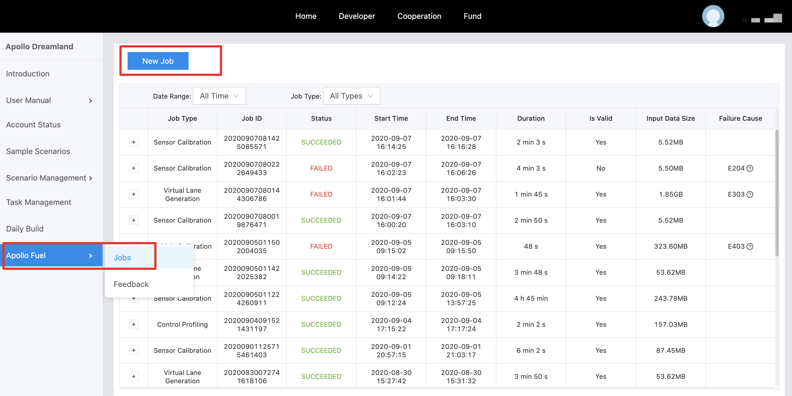
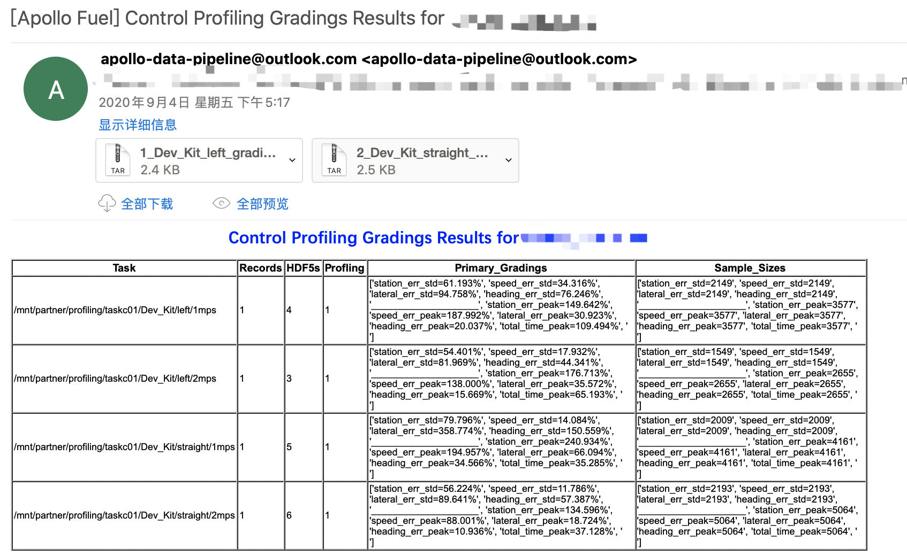
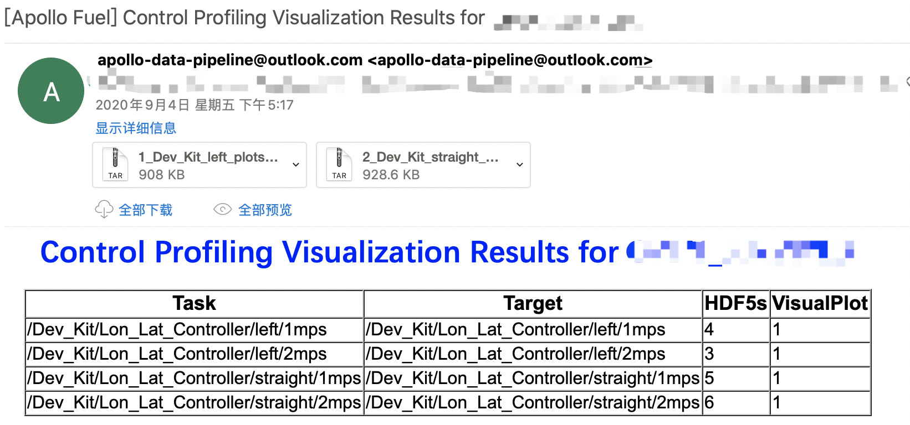

Control Profiling Service¶
Overview¶
Control Profiling Service is a cloud based service to evaluate the control and planning trajectories from road test or simulation records.
Prerequisites¶
Apollo 6.0 or higher version.
Baidu Cloud BOS service registered according to document
Fuel service account on Apollo Dreamland
Main Steps¶
Data collection
Job submission
Results analysis
Data Collection¶
Data Recording¶
Finish one autonomous driving scenario with a closed loop test, e.g. RTK or close loop.
Data Sanity Check¶
Make sure the following channels are included in records before submitting them to cloud service：
Modules
channel
items
Canbus
/apollo/canbus/chassisexits without error message
Control
/apollo/controlexits without error message
Planning
/apollo/planning-
Localization
/apollo/localization/pose-
GPS
apollo/sensor/gnss/best_posesol_typetoNARROW_INTYou can check with
cyber_recorder：
cyber_recorder info xxxxxx.record.xxxxx

Job Submission¶
Upload data to BOS¶
Here is the folder structure requirements for job submission:
A cyber record file containing the execution of open space planner scenario.
A configuration file
vehicle_param.pb.txt; there is a sample file underapollo/modules/common/data/vehicle_param.pb.txt.
Submit job in Dreamland¶
Go to Apollo Dreamland, login with Baidu account, choose Apollo Fuel --> Jobs，New Job, Control Profiling，and input the correct BOS path as in Upload data to BOS section：


Results Analysis¶
After job is done, you should be expecting one email per job including
Grading resultsandVisualization results.

